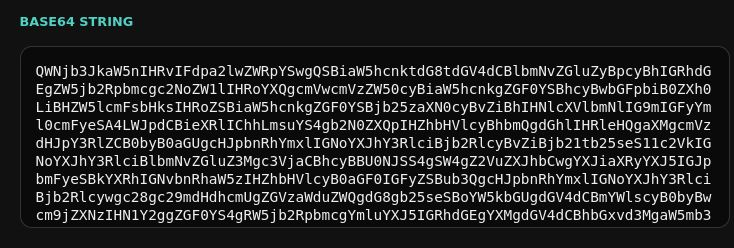

If you want to jump straight into the base64 encoder/decoder, go to here.
According to Wikipedia, A binary-to-text encoding is a data encoding scheme that represents binary data as plain text. Generally, the binary data consists of a sequence of arbitrary 8-bit byte (a.k.a. octet) values and the text is restricted to the printable character codes of commonly-used character encodings such as ASCII. In general, arbitrary binary data contains values that are not printable character codes, so software designed to only handle text fails to process such data. Encoding binary data as text allows information that is not inherently stored as text to be processed by software that otherwise cannot process arbitrary binary data. The software cannot interpret the information, but it can perform useful operations on the data such as transmit and store.
Base64 is one of the binary-to-text encoding. Even though a base64 data looks random, it's not a way to pass secret datas or to make your data secure, as it's easily decodable. (I mean just look at the Internet, there are so many base64 encoder/decoder out there) Base64 works by using 64 printable characters to represent each 6-bit segment of a sequence of byte. (Hence, the name base64) Base64 uses the characters from A-Z, a-z, 0-9, + and /. The = sign is used for padding, to make sure the length is a multiple of four characters.
🤓 umm why multiple of 4?
Base64 uses a multiple of 4 because it's the smallest common ground between 8-bit data (bytes) and 6-bit Base64 characters. Computer data is stored in 8 bits, or what we can call a byte. Base64 uses 64 characters, which means each character represents 6 bits. (2^6=64) To make these two line up perfectly without leaving "half-finished" bytes, you need a total bit count that is divisible by both 6 and 8, which is 24 bits. To make that 24-bit block, you take 3 bytes of data (3*8=24 bits) and convert them into Base64 characters. (4*6=24 bits) Because the conversion always works in these 24-bit chunks, the output string length must naturally be a multiple of 4.
So, if the data isn't exactly 3, 6, or 9 bytes, you have leftover bits. This is where the padding (=) comes in, to "fill the gap" until the string reaches the next multiple of 4.
If you were wondering why if you encode base64 and got equal signs (=), now you know!
This is a base64 encoder and decoder, if you want to experiment with stuff then use it.
The world of a curious mind in a site.
© sams331. All rights reserved.